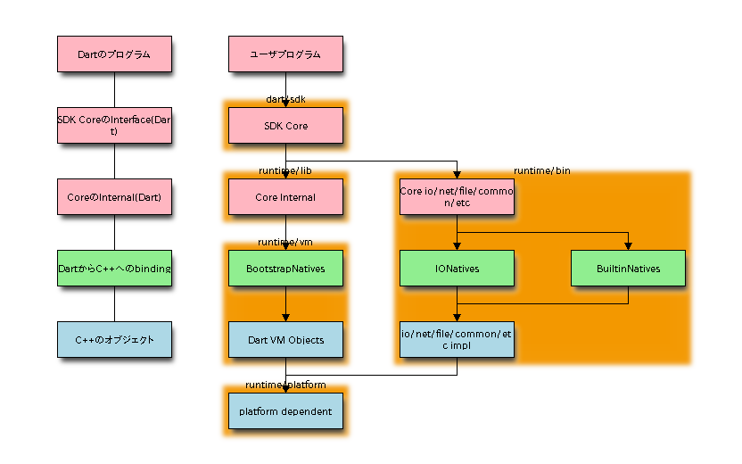
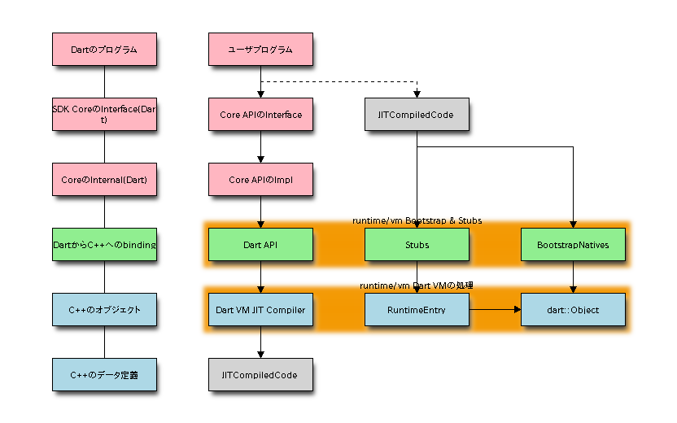

Dart VM Advent Calendar 2012 12/23¶
Dartのアーキテクチャ¶
advent calendar drivenに色々調べてきた結果、全体アーキテクチャがなんとなく見えてきたので、その概要を紹介します。

pinkがDartのソースコードで、blueがC++のソースコードになります。
greenのnative extensionが仲介して、DartからC++のオブジェクトやメソッドをbindingします。
多くの場合、dart/sdkの下は、APIのインタフェースや抽象クラスのみ提供し、 実装はruntimeの下で定義されていることが多いです。
また、Coreに対応するC++のオブジェクトが定義されており、 必要最低限定義されたC++のオブジェクトをbindするのは、BootstrapNativesです。
必要最低限といいながら、高速化にために定義しているものも多いです。
Dart VMのビルド¶
Dart VMのビルドは複数のフェーズから構成されています。
- 必須のC++ソースコードのコンパイル。 runtime/libやruntime/platform下をコンパイルします。
- VM本体のコンパイル。 runtime/vmの下をコンパイルします。
- builtin系C++ソースコードのコンパイル。 runtime/libおよびruntime/binのbuiltin系をコンパイルします。
- VM本体のビルドとtest。 上記のC++のオブジェクトを組み合わせてVM本体をビルドし、テストを走らせます。
- SDKやCoreのソースコードのsnapshot。 SDKとCoreのソースコードを、VM本体のgen_snapshotを使って、parseしてASTに変換したのちserializeします。
- Dart VM本体と、main.ccと、serializeしたバイナリを組み合わせて、dart を作成する。
上記アーキテクチャの下の方から順にコンパイルしていきます。
VM本体を生成してからSDKとinternalのdart ソースコードをsnapshotし、すべてを内包したdartコマンドを生成します。
そのため、dart本体は起動時にASTをdeserializeするだけであり、起動時のfile ioとparse処理が不要になり高速に起動できます。
またgen_snapshotコマンドにより、ユーザプログラムもシリアライズして組み込んでおき、ユーザプログラムの高速な起動も可能なはずですが、試せていないです。
BootstrapNatives¶
// Copyright (c) 2012, the Dart project authors. Please see the AUTHORS file
// for details. All rights reserved. Use of this source code is governed by a
// BSD-style license that can be found in the LICENSE file.
#ifndef VM_BOOTSTRAP_NATIVES_H_
#define VM_BOOTSTRAP_NATIVES_H_
#include "vm/native_entry.h"
// bootstrap dart natives used in the core dart library.
namespace dart {
// List of bootstrap native entry points used in the core dart library.
#define BOOTSTRAP_NATIVE_LIST(V) \
V(Object_toString, 1) \
V(Object_noSuchMethod, 5) \
V(Object_runtimeType, 1) \
V(Function_apply, 2) \
V(InvocationMirror_invoke, 4) \
V(AbstractType_toString, 1) \
V(Identical_comparison, 2) \
V(Integer_bitAndFromInteger, 2) \
V(Integer_bitOrFromInteger, 2) \
V(Integer_bitXorFromInteger, 2) \
V(Integer_addFromInteger, 2) \
V(Integer_subFromInteger, 2) \
V(Integer_mulFromInteger, 2) \
V(Integer_truncDivFromInteger, 2) \
V(Integer_moduloFromInteger, 2) \
V(Integer_greaterThanFromInteger, 2) \
V(Integer_equalToInteger, 2) \
V(Integer_parse, 1) \
V(ReceivePortImpl_factory, 1) \
V(ReceivePortImpl_closeInternal, 1) \
V(SendPortImpl_sendInternal_, 3) \
V(Smi_shlFromInt, 2) \
V(Smi_shrFromInt, 2) \
V(Smi_bitNegate, 1) \
V(Mint_bitNegate, 1) \
V(Bigint_bitNegate, 1) \
V(Double_getIsNegative, 1) \
V(Double_getIsInfinite, 1) \
V(Double_getIsNaN, 1) \
V(Double_add, 2) \
V(Double_sub, 2) \
V(Double_mul, 2) \
V(Double_div, 2) \
V(Double_trunc_div, 2) \
V(Double_remainder, 2) \
V(Double_modulo, 2) \
V(Double_greaterThanFromInteger, 2) \
V(Double_equalToInteger, 2) \
V(Double_greaterThan, 2) \
V(Double_equal, 2) \
V(Double_doubleFromInteger, 2) \
V(Double_round, 1) \
V(Double_floor, 1) \
V(Double_ceil, 1) \
V(Double_truncate, 1) \
V(Double_toInt, 1) \
V(Double_parse, 1) \
V(Double_toStringAsFixed, 2) \
V(Double_toStringAsExponential, 2) \
V(Double_toStringAsPrecision, 2) \
V(Double_pow, 2) \
V(JSSyntaxRegExp_factory, 4) \
V(JSSyntaxRegExp_getPattern, 1) \
V(JSSyntaxRegExp_multiLine, 1) \
V(JSSyntaxRegExp_ignoreCase, 1) \
V(JSSyntaxRegExp_getGroupCount, 1) \
V(JSSyntaxRegExp_ExecuteMatch, 3) \
V(ObjectArray_allocate, 2) \
V(ObjectArray_getIndexed, 2) \
V(ObjectArray_setIndexed, 3) \
V(ObjectArray_getLength, 1) \
V(ObjectArray_copyFromObjectArray, 5) \
V(StringBase_createFromCodePoints, 1) \
V(StringBase_substringUnchecked, 3) \
V(OneByteString_substringUnchecked, 3) \
V(OneByteString_splitWithCharCode, 2) \
V(String_getHashCode, 1) \
V(String_getLength, 1) \
V(String_charAt, 2) \
V(String_charCodeAt, 2) \
V(String_concat, 2) \
V(String_toLowerCase, 1) \
V(String_toUpperCase, 1) \
V(Strings_concatAll, 1) \
V(Math_sqrt, 1) \
V(Math_sin, 1) \
V(Math_cos, 1) \
V(Math_tan, 1) \
V(Math_asin, 1) \
V(Math_acos, 1) \
V(Math_atan, 1) \
V(Math_atan2, 2) \
V(Math_exp, 1) \
V(Math_log, 1) \
V(DateNatives_currentTimeMillis, 0) \
V(DateNatives_timeZoneName, 1) \
V(DateNatives_timeZoneOffsetInSeconds, 1) \
V(DateNatives_localTimeZoneAdjustmentInSeconds, 0) \
V(AssertionError_throwNew, 2) \
V(TypeError_throwNew, 5) \
V(FallThroughError_throwNew, 1) \
V(AbstractClassInstantiationError_throwNew, 2) \
V(NoSuchMethodError_throwNew, 2) \
V(Stopwatch_now, 0) \
V(Stopwatch_frequency, 0) \
V(ByteArray_getLength, 1) \
V(ByteArray_getInt8, 2) \
V(ByteArray_setInt8, 3) \
V(ByteArray_getUint8, 2) \
V(ByteArray_setUint8, 3) \
V(ByteArray_getInt16, 2) \
V(ByteArray_setInt16, 3) \
V(ByteArray_getUint16, 2) \
V(ByteArray_setUint16, 3) \
V(ByteArray_getInt32, 2) \
V(ByteArray_setInt32, 3) \
V(ByteArray_getUint32, 2) \
V(ByteArray_setUint32, 3) \
V(ByteArray_getInt64, 2) \
V(ByteArray_setInt64, 3) \
V(ByteArray_getUint64, 2) \
V(ByteArray_setUint64, 3) \
V(ByteArray_getFloat32, 2) \
V(ByteArray_setFloat32, 3) \
V(ByteArray_getFloat64, 2) \
V(ByteArray_setFloat64, 3) \
V(ByteArray_setRange, 5) \
V(Int8Array_new, 1) \
V(Int8Array_newTransferable, 1) \
V(Int8Array_getIndexed, 2) \
V(Int8Array_setIndexed, 3) \
V(Uint8Array_new, 1) \
V(Uint8Array_newTransferable, 1) \
V(Uint8Array_getIndexed, 2) \
V(Uint8Array_setIndexed, 3) \
V(Uint8ClampedArray_new, 1) \
V(Uint8ClampedArray_newTransferable, 1) \
V(Uint8ClampedArray_getIndexed, 2) \
V(Uint8ClampedArray_setIndexed, 3) \
V(Int16Array_new, 1) \
V(Int16Array_newTransferable, 1) \
V(Int16Array_getIndexed, 2) \
V(Int16Array_setIndexed, 3) \
V(Uint16Array_new, 1) \
V(Uint16Array_newTransferable, 1) \
V(Uint16Array_getIndexed, 2) \
V(Uint16Array_setIndexed, 3) \
V(Int32Array_new, 1) \
V(Int32Array_newTransferable, 1) \
V(Int32Array_getIndexed, 2) \
V(Int32Array_setIndexed, 3) \
V(Uint32Array_new, 1) \
V(Uint32Array_newTransferable, 1) \
V(Uint32Array_getIndexed, 2) \
V(Uint32Array_setIndexed, 3) \
V(Int64Array_new, 1) \
V(Int64Array_newTransferable, 1) \
V(Int64Array_getIndexed, 2) \
V(Int64Array_setIndexed, 3) \
V(Uint64Array_new, 1) \
V(Uint64Array_newTransferable, 1) \
V(Uint64Array_getIndexed, 2) \
V(Uint64Array_setIndexed, 3) \
V(Float32Array_new, 1) \
V(Float32Array_newTransferable, 1) \
V(Float32Array_getIndexed, 2) \
V(Float32Array_setIndexed, 3) \
V(Float64Array_new, 1) \
V(Float64Array_newTransferable, 1) \
V(Float64Array_getIndexed, 2) \
V(Float64Array_setIndexed, 3) \
V(ExternalInt8Array_getIndexed, 2) \
V(ExternalInt8Array_setIndexed, 3) \
V(ExternalUint8Array_getIndexed, 2) \
V(ExternalUint8Array_setIndexed, 3) \
V(ExternalInt16Array_getIndexed, 2) \
V(ExternalInt16Array_setIndexed, 3) \
V(ExternalUint16Array_getIndexed, 2) \
V(ExternalUint16Array_setIndexed, 3) \
V(ExternalInt32Array_getIndexed, 2) \
V(ExternalInt32Array_setIndexed, 3) \
V(ExternalUint32Array_getIndexed, 2) \
V(ExternalUint32Array_setIndexed, 3) \
V(ExternalInt64Array_getIndexed, 2) \
V(ExternalInt64Array_setIndexed, 3) \
V(ExternalUint64Array_getIndexed, 2) \
V(ExternalUint64Array_setIndexed, 3) \
V(ExternalFloat32Array_getIndexed, 2) \
V(ExternalFloat32Array_setIndexed, 3) \
V(ExternalFloat64Array_getIndexed, 2) \
V(ExternalFloat64Array_setIndexed, 3) \
V(isolate_getPortInternal, 0) \
V(isolate_spawnFunction, 2) \
V(isolate_spawnUri, 1) \
V(Mirrors_isLocalPort, 1) \
V(Mirrors_makeLocalInstanceMirror, 1) \
V(Mirrors_makeLocalMirrorSystem, 0) \
V(LocalObjectMirrorImpl_invoke, 3) \
V(LocalObjectMirrorImpl_getField, 2) \
V(LocalObjectMirrorImpl_setField, 3) \
V(LocalClosureMirrorImpl_apply, 2) \
V(LocalClassMirrorImpl_invokeConstructor, 3) \
V(GrowableObjectArray_allocate, 2) \
V(GrowableObjectArray_getIndexed, 2) \
V(GrowableObjectArray_setIndexed, 3) \
V(GrowableObjectArray_getLength, 1) \
V(GrowableObjectArray_getCapacity, 1) \
V(GrowableObjectArray_setLength, 2) \
V(GrowableObjectArray_setData, 2) \
V(WeakProperty_new, 2) \
V(WeakProperty_getKey, 1) \
V(WeakProperty_getValue, 1) \
V(WeakProperty_setValue, 2) \
class BootstrapNatives : public AllStatic {
public:
static Dart_NativeFunction Lookup(Dart_Handle name, int argument_count);
#define DECLARE_BOOTSTRAP_NATIVE(name, ignored) \
static void DN_##name(Dart_NativeArguments args);
BOOTSTRAP_NATIVE_LIST(DECLARE_BOOTSTRAP_NATIVE)
#undef DECLARE_BOOTSTRAP_NATIVE
};
} // namespace dart
#endif // VM_BOOTSTRAP_NATIVES_H_
Dartの基本的なデータは構造は、すべてDart VMで定義されており、 すべてbootstrap_nativesを介してbindingされます。
上記にないものは、bootstrap_nativesを組み合わせて作成するオブジェクトのはずです。
bootstrap_natives以外にも、builtin_nativesやio_nativesがruntme/binに定義されており、 それらはOSの基本機能(IO File Socket Thread Crypt Processなど)を操作するC++オブジェクトにbindingします。
JITコンパイルされたコードとの連携¶
JITコンパイルされたコードは、どのような階層になるのでしょうか。

Dartのソースコードは、Dart VMを操作するDart APIを使用し、ソースコードをloadscriptしてJITコンパイルします。
JITコンパイルされたコードには、StubsやBootstrapへの呼び出しを埋め込んコードを生成します。
JITコンパイルされたコードは、Stubs経由でVM連携用の処理を呼び出したり、Nativeに用意されたメソッドを呼び出します。
まとめ¶
- Dart Binding C++の3階層に分かれる。
- Coreのオブジェクトは、Dart VM内のC++オブジェクトとbindingする。
- JITコンパイルされたコードは、BootstrapされたNativeシンボルおよびStubsを経由してVMと連携する。
- 次はDart VMのアーキテクチャを、、